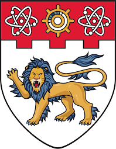
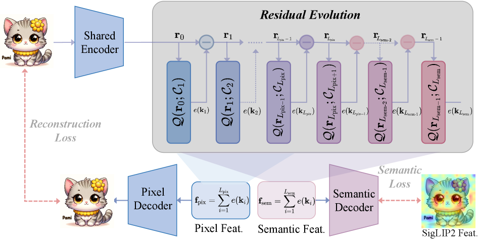
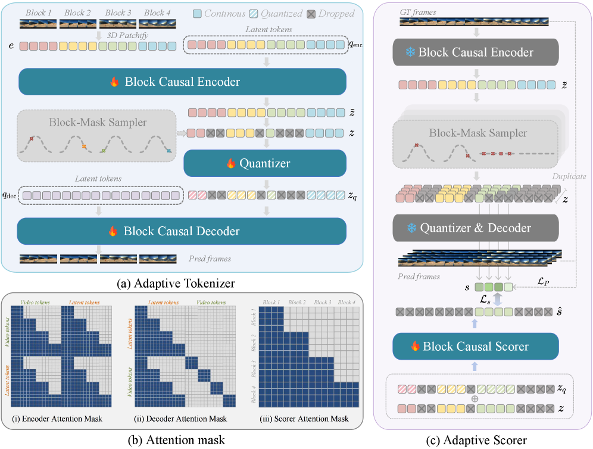
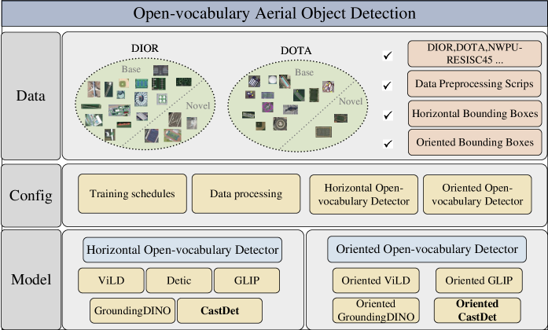
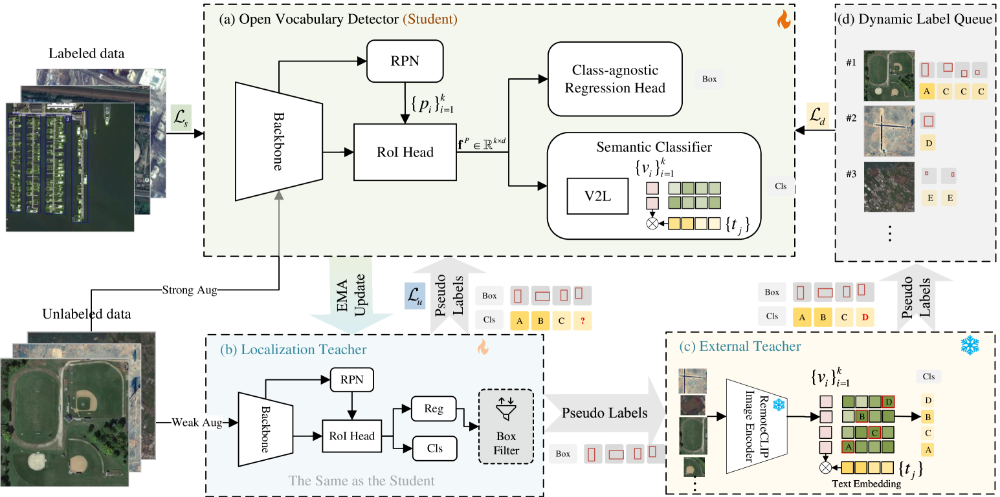
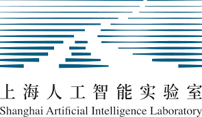

About
I am a Master's student at Shanghai Jiao Tong University, supervised by Prof. Xue Yang and Prof. Junchi Yan. I also visited Nanyang Technological University S-Lab, supervised by Prof. Ziwei Liu. Before that, I received my Bachelor's degree from SJTU in 2023. Currently, I am interning at Microsoft Research Asia, mentored by Yifan Yang, Chong Luo, and Lijuan Wang.
My research focuses on Unified Understanding and Generation, Image/Video Tokenization and Generation, Reinforcement Learning, and Multi-modal Perception.
News
Education

Visiting Student, Nanyang Technological University (S-Lab)
Jan 2026 – PresentSupervisor: Ziwei Liu | Topic: Unified vision-language understanding and generation
M.S. in Information Engineering, Shanghai Jiao Tong University
Sept 2023 – June 2026GPA: 3.71/4.0 | Supervisor: Xue Yang, Junchi Yan
B.S. in Information Engineering (Elite Program), Shanghai Jiao Tong University
Sept 2019 – June 2023GPA: 3.74/4.3 (Obtained postgraduate recommendation)
Selected Works
BizGenEval: A Systematic Benchmark for Commercial Visual Content Generation
Preprint
The first comprehensive benchmark for commercial visual content generation, covering five domains, four capability dimensions, 20 evaluation tasks, and 8,000 human-verified checklist questions.
SkillOpt: Executive Strategy for Self-Evolving Agent Skills
Preprint
The first systematic controllable text-space optimizer for agent skills: turns scored rollouts into bounded edits on a skill document, accepted only when improving held-out validation. Best or tied on all 52 evaluated cells across six benchmarks, seven models, and three harnesses.
SenseNova-U1: Unifying Multimodal Understanding and Generation with NEO-unify Architecture
Technical Report
A native unified multimodal paradigm coupling autoregressive language modeling with pixel-space flow matching.
MM-WebAgent: A Hierarchical Multimodal Web Agent for Webpage Generation
Preprint
A multimodal web agent enabling hierarchical agentic planning over native multimodal asset generation with hierarchical self-reflection for iterative webpage refinement.

EvoTok: A Unified Image Tokenizer via Residual Latent Evolution for Visual Understanding and Generation
European Conference on Computer Vision (ECCV) 2026
A unified image tokenizer that represents images as a residual latent evolution trajectory within a shared latent space, effective for both semantic alignment and pixel reconstruction.

AdapTok: Learning Adaptive and Temporally Causal Video Tokenization in a 1D Latent Space
IEEE/CVF Conference on Computer Vision and Pattern Recognition (CVPR) 2026
An adaptive video tokenization framework featuring temporal causality, 1D latent token space, and flexible adaptive token allocation. Achieves Pareto optimality between token quantity and reconstruction quality.

Exploiting Unlabeled Data with Multiple Expert Teachers for Open Vocabulary Aerial Object Detection and Its Orientation Adaptation
International Journal of Computer Vision (IJCV) 2026
Extended CastDet for open-vocabulary oriented detection in aerial scenes. Achieves 36.0% mAP on DIOR-R and 24.3% mAP on DOTA-R, surpassing SOTAs significantly.

Toward Open Vocabulary Aerial Object Detection with CLIP-Activated Student-Teacher Learning
European Conference on Computer Vision (ECCV) 2024
Pioneers open vocabulary aerial object detection (OVAD) with CastDet, achieving 46.5% mAP on VisDroneZSD, outperforming SOTA by 21.0%.
Experience
Research Intern, Microsoft Research Asia "Stars of Tomorrow Award"
Aug 2025 – PresentRL for autoregressive complex layout image generation; multimodal web generation agent (MM-WebAgent); commercial visual benchmark (BizGenEval); skill/harness evolution (SkillOpt); agentic slides generation
Visiting Student, Nanyang Technological University, S-Lab
Jan 2026 – PresentCore contributor to SenseNova-U1 native unified multimodal understanding and generation model
Deep Learning Engineering Intern, NVIDIA
Feb 2025 – June 2025Neural Reconstruction Engine (NRE) for DRIVE Sim; novel view synthesis

Academic Cooperation, Shanghai AI Laboratory (OpenGVLab)
Feb 2024 – May 2025Open-vocabulary object detection (ECCV'24, IJCV'26); adaptive video tokenizer (CVPR'26)
Computer Vision Algorithm Intern, BOSCH
Mar 2024 – July 2024Open-vocabulary object detection; scene graph generation; semi-automatic annotation frameworks